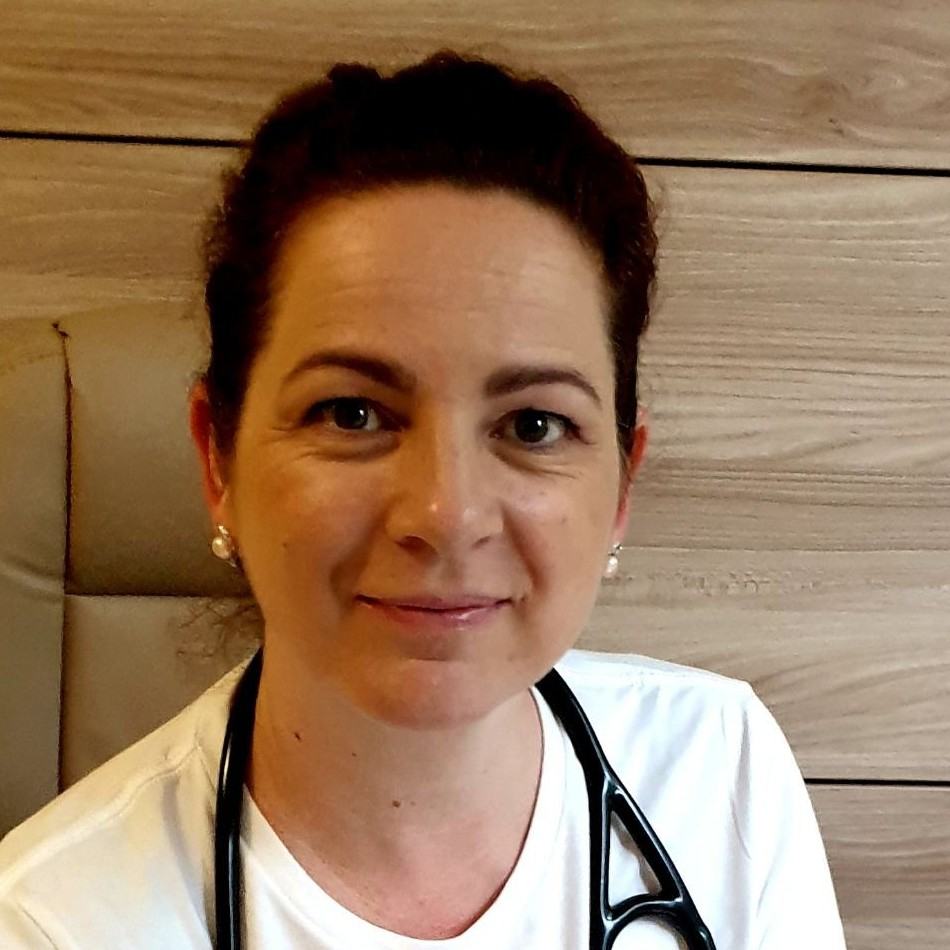
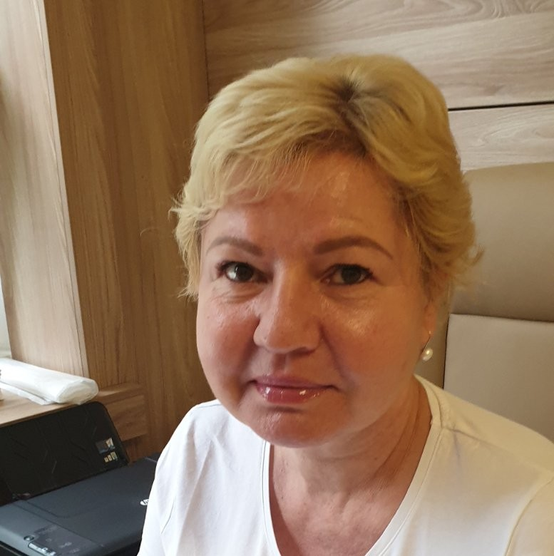

Upozornenie! V súčasnej epidemiologickej situácii žiadame pacientov aby nás pred každým vyšetrením kontaktovali najprv telefonicky !!!
Ďakujeme za pochopenie.
Detská lekárka
Detská sestra
| Ordinačné hodiny | |
|---|---|
| Pondelok | 6:45 - 15:00 |
| Utorok | 6:45 - 15:00 |
| Streda | 6:45 - 14:00 |
| Štvrtok | 6:45 - 13:00 |
| Piatok | 6:45 - 12:00 |
| (Po 12:00 iba preventívne prehľiadky pre objednaných pacientov) | |
Dovoláte sa nám na: +421 415 110 243
A pre preskripciu opakovaných e-receptov po dohovore s lekárom nám napíšte na: mudrdaubnerova@gmail.com
Nájdete nás v Detskej poliklinike,na 1. poschodí, dvere 7
záškrt, tetanus, čierny kašeľ, vírusová hepatitída B, invazívne hemofilové nákazy, detská obrna
pneumokokové invazívne ochorenia
Odporúčame vám zaočkovať sa aj proti rotavírusovým hnačkovým ochoreniam.
osýpky, mumps, ružienka
osýpky, mumps, ružienka
záškrt, tetanus, čierny kašeľ
detská obrna
osýpky, mumps, ružienka
záškrt, tetanus, čierny kašeľ
detská obrna
záškrt, tetanus
Zoznam nepovinných ale odporúčaných očkovaní nájdete na: www.sprievodcaockovanim.sk
Pre bližšie informácie kontaktujte našu ambulanciu.